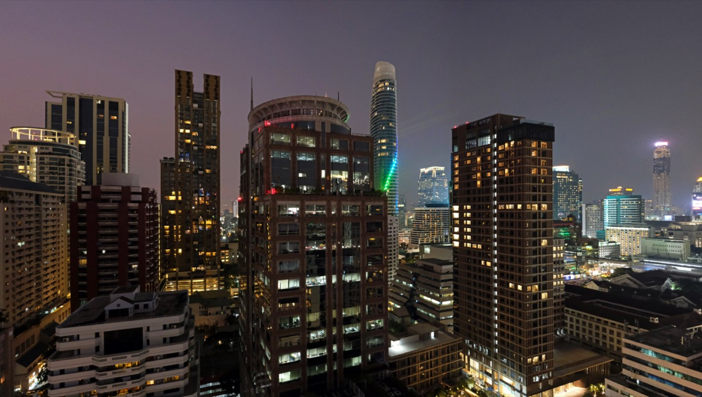
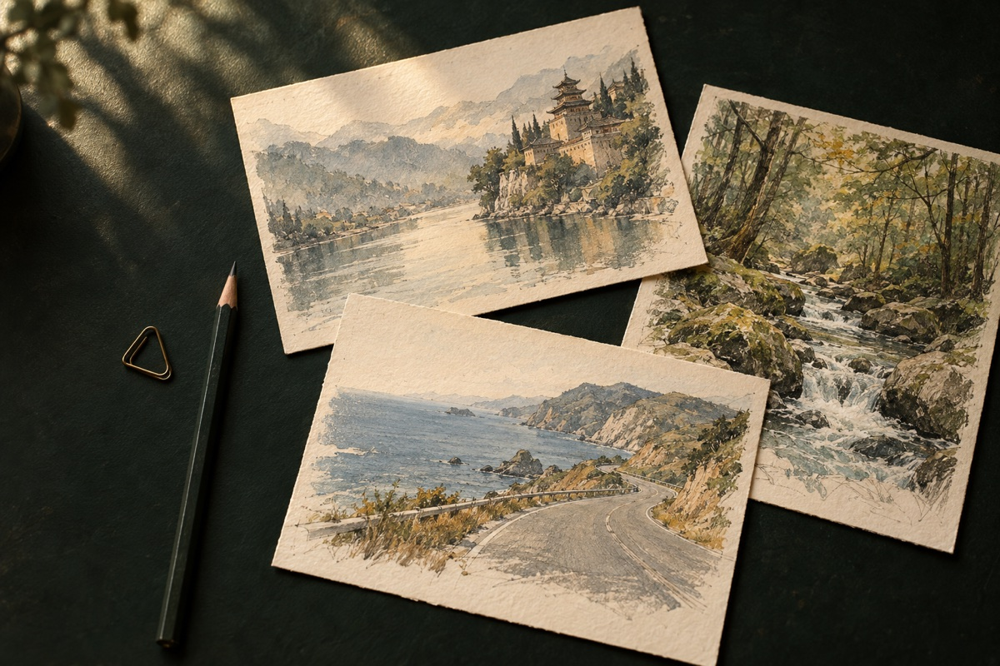

A COLLECTION OF JOURNEYS / VOL. 01
CHAPTER 01 — BANGKOK, THAILAND
Afterthe sunset.
熱帶浮光，曼谷。
從昭披耶河的夜船，到安帕瓦的螢火。
第一段旅程，從曼谷開始。
THE MOMENTS BETWEEN / 在目的地之外把遠方，收成一張明信片。原創旅行意象插畫

旅行裡記得最清楚的，
往往是沒有安排的那一刻。
河岸夜船、茶山水鄉、跨海重機，還有等待極光的長夜。八份行程，收著不同的出發方式；從城市散策到環島自駕，挑一段路，慢慢走進去。
SELECTED CHAPTERS / 旅程選輯
每一站，都有一幕。
THE COLLECTION / 08 JOURNEYS
下一幕，你想去哪裡？
04 COUNTRIES · MANY MEMORIES
THE NEXT CHAPTER IS STILL UNWRITTEN
To be elsewhere.
下一個畫面，留給下一次出發。